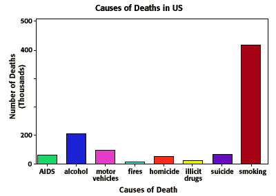
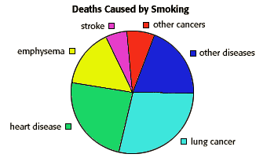

Lung Toxicology Problem Set
Problem 5: Causes of death in the US
For help to answer the question:
Which of the following causes the most deaths in the US?
A. AIDS B. motor vehicles C. homicide D. smoking E. alcohol
Tutorial
|
The graph below shows several factors that cause deaths in the US. As you can see, smoking causes the most deaths by far. 
|
| Most people associate smoking with lung cancer. Lung cancer is responsible for many of the deaths caused by smoking, but there are also other diseases associated with smoking. |  |


The Biology Project
The University of Arizona
Tuesday, October 14, 1997
Contact the Development Team
http://www.biology.arizona.edu
All contents copyright © 1997. All rights reserved.